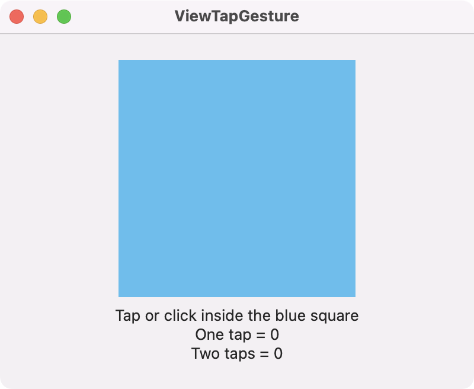

Use a view's tap gesture modifier to perform an action when the view is tapped (clicked). The count parameter defines how many taps (or clicks) are needed to perform the action.
import SwiftUI
struct ContentView: View {
@State private var onetap = 0
@State private var twotaps = 0
var body: some View {
VStack {
Rectangle()
.fill(.cyan)
.frame(width: 200, height: 200)
.onTapGesture(count: 2) {
twotaps += 1
}
.onTapGesture {
onetap += 1
}
Text("Tap or click inside the blue square")
Text("One tap = \(onetap)")
Text("Two taps = \(twotaps)")
}
.frame(width: 400, height: 300)
}
}

Swift Programming for macOS © 2023
Built by Gavin Wiggins